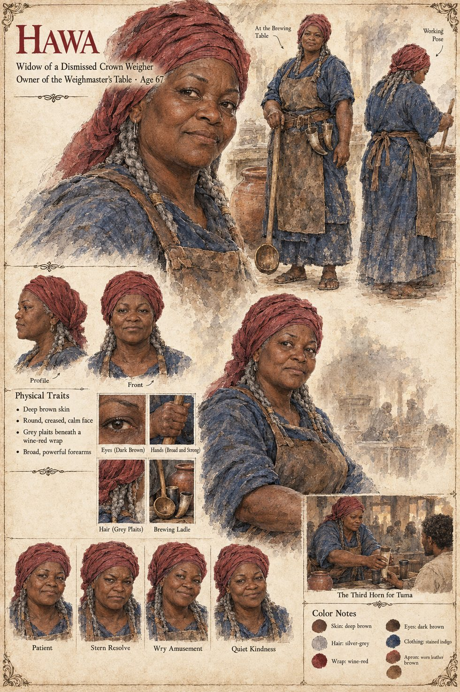

Hawa
Widow of a dismissed crown weigher · keeper of the Weighmaster's Table · brewer of Grey-Never · sixty in Chapter Seven, 67 on her sheet
The widow of a crown weigher who lost his post, and the owner of the Weighmaster's Table, a low mud-brick beer-house at the lower end of Kambaso's gold-weighing yard whose thatch has been repaired so often that no single straw of it is older than a decade: a broad-armed woman of sixty who watered her millet beer with a steadiness the whole street admired and no one had ever managed to prove. It is at her tables that the palace dog's long life becomes talk, and then theory; that a drunk Bantaran caravan-master calls it the river's long debt, in front of a Recounter in a plain brown wrapper who does not laugh; and that the fishmonger Dembele says what is, by the standards of every age before and since, entirely right, and is forgotten within the week. Her darker brew, sold by the horn and called Grey-Never, outsells her ordinary beer four to one.
On every Uncounted Day since it was named she sends a small keg of it up to the palace kennel with her compliments, to be drunk at dusk by the wardens on the kennel wall and the kennelmaster together, the one night of the year on which nothing said or done is entered anywhere. Kolo, who after the business with the fish feeds the dog from his own pouch, keeps this one exception, since he could not have refused it in front of the wardens without announcing aloud that he suspected the woman who sent it. When Tuma flees to her tables on the night of the Second Asking and drinks two horns faster than is wise, she, who has never in thirty years turned a paying customer away, or a rumour either, puts a third horn in his hand and tells him to start again from the beginning. The keg Kolo drinks on the last Uncounted Day has been dosed at her back door by Sira. The manuscript does not say whether Hawa ever knows, and does not say what becomes of her; in the Epilogue her granddaughter's brewery sells a dark ale for two hundred years, and the manuscript does not say it is the same brew.
The manuscript gives her trade, her widowhood, her arms, her age in Chapter Seven and her third horn. The sheet's age of 67 follows from the manuscript's sixty, seven years on; its deep brown skin, round creased calm face, grey plaits beneath a wine-red wrap, stained indigo dress and worn leather apron are its own, as are its panels Patient, Stern Resolve, Wry Amusement and Quiet Kindness and its scene The Third Horn for Tuma.
“a broad-armed woman of sixty who watered her millet beer with a steadiness the whole street admired and no one had ever managed to prove”